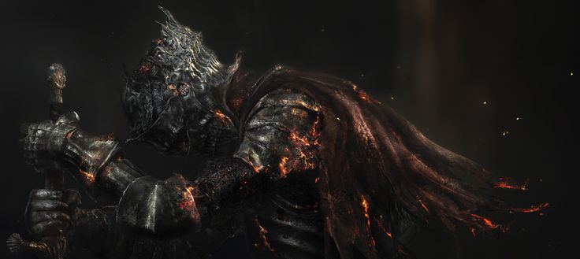

Bienvenido/a a Dark Tales III
Explorá el oscuro y fascinante mundo de Dark Souls III y sumérgete de lleno en su historia, personajes y secretos ocultos.

Dark Souls: Comienzos y Precursores
Una aventura que comienza en el legendario reino de Lordran, aquel que resguardaba la imponente Anor Londo, ciudad de los dioses. Reino donde la profecía del no-muerto elegido dio nacimiento a una de las cruzadas más emocionantes, misteriosas y oscuras de todos los tiempos. Su historia comienza con el advenimiento de la Era de Fuego, luego de que los Dragones Eternos fueran derrotados por los primeros cuatro Señores: Gwyn, el primer Señor de la Llama; el nigromante Nito, Rey del Cementerio; la Bruja de Izalith, madre de las Hijas del Caos; y el Pigmeo Furtivo quien, al morir a manos del No-Muerto Elegido, hereda su Alma Oscura a sus descendientes, señores de la Ciudad Anillada. Es reemplazado con Seath el Descamado, el Traidor, dragón ciego que se aliara con Gwyn y sus compañeros para destruir la estirpe de los Dragones Eternos.
Una aventura que continúa en la lejana tierra de Drangleic, antaño próspera y rica, pero caída en decadencia y condenada por una serie de desafortunados eventos. La propagación de la Maldición de los No Muertos y la guerra iniciada cuando "los Gigantes cruzaron el mar" fueron los principales desencadenantes de tan estrepitosa caída. Gobernada en sus días de gloria por el Rey Vendrick, un rey justo y honorable, fue llevada a la prosperidad con ayuda de los caballeros de Alto Rango, seleccionados por el propio Vendrick. Pero lamentablemente, al propagarse la Maldición, el rey sucumbió ante la misma maldición, no pudo soportar el peso de ser monarca y dejó el reino a manos de su esposa, quien afortunadamente no había sido afectada. Vendrick eventualmente se convierte en Hueco, vagando sin rumbo y por la eternidad en la Cámara Real, donde será encontrado por el Portador de la Maldición.
Pero todo esto es cosa pasada, apenas un pequeño vistazo a los eventos que representan el inicio de esta tanto atrapante como escalofriante historia que es la de Dark Souls.
